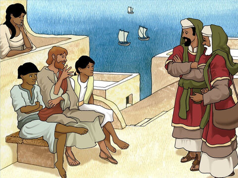
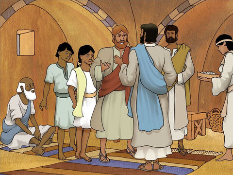
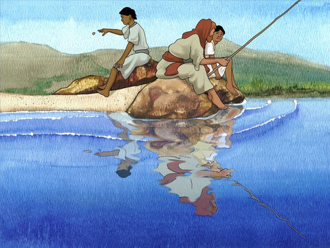
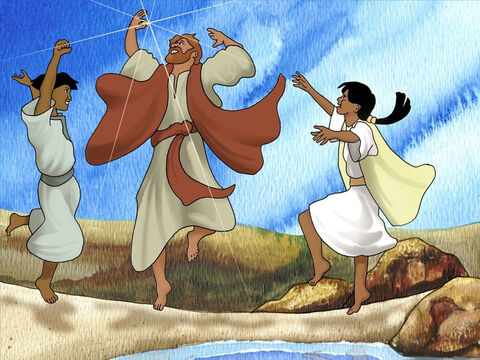

The Temple Tax
And when they were come to Capernaum, they that received tribute money came to Peter, and said, Doth not your master pay tribute?
He saith, Yes. And when he was come into the house, Jesus prevented him, saying, What thinkest thou, Simon? of whom do the kings of the earth take custom or tribute? of their own children, or of strangers?
Peter saith unto him, Of strangers. Jesus saith unto him, Then are the children free.
Notwithstanding, lest we should offend them, go thou to the sea, and cast an hook, and take up the fish that first cometh up; and when thou hast opened his mouth, thou shalt find a piece of money: that take, and give unto them for me and thee.
Matthew 17:24-27
- 
- 
- 
- 